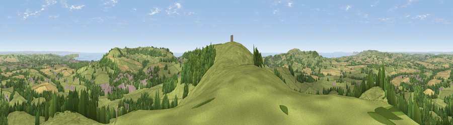

Gat Cliff
#1010 in England · top 13% of its area beats it · near WroxallThe view, rendered

A 360° render of this exact spot computed from the terrain model, tree cover and land cover — summer colours, afternoon light, calibrated against photographs of famous viewpoints. Real trees, hedges and buildings will differ in detail.
The panorama
Grey silhouette: terrain skyline in each direction (720 bearings, Earth curvature and refraction included). Dashed green: skyline with trees (+15 m) and buildings (+8 m) as obstacles. Blue strip: how far the ground is visible on each bearing.
Where the view opens
Wedge length = distance to the farthest visible ground on that bearing (vegetation-aware). Rings at 10, 25 and 50 km.
What fills the view
61% grassland · 21% woodland · 12% cropland · 3% built-up · 2% water
Angular shares of the visible panorama (visual magnitude), not map area. Landscape diversity 0.47 (0–1 Shannon).
Key numbers
More beautiful places nearby
The staircase of upgrades: each row has a higher view potential than everything closer. Driving times are estimates from straight-line distance, calibrated against real road routing — check an actual route before setting out.
| Place | Direction | Drive | Score |
|---|---|---|---|
| Viewpoint near Wroxall | S · 1 km | ~2 min | 83.2 |
| Viewpoint near St. Lawrence | S · 3 km | ~7 min | 88.2 |
| Viewpoint near Niton | SW · 6 km | ~13 min | 89.2 |
| Viewpoint near West Bexington | W · 99 km | ~123 min | 89.5 |
| The Knoll | W · 100 km | ~125 min | 91.0 |
50.61938, -1.24281 · source: osm peak · position refined by local search. Computed location — check access rights before visiting.